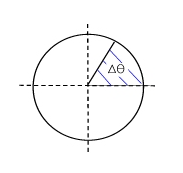
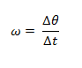
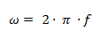
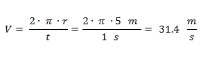
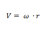
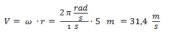
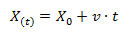
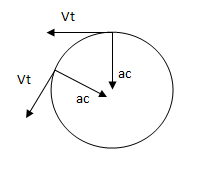
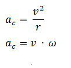

La Naturaleza y tu día a día están llenos de ejemplos de movimientos circulares uniformes (m.c.u.). La propia Tierra es uno de ellos: da una vuelta sobre su eje cada 24 horas. Los viejos tocadiscos o un ventilador son otros buenos ejemplos de m.c.u.
La velocidad angular es la rapidez con la que varía el ángulo en el tiempo y se mide en radianes / segundos. Recordemos que 2 π radianes es igual a 360°.
Si por ejemplo el ángulo es de 360 grados (una vuelta) y se tarda un segundo en completarla, la velocidad angular es: 2 π [rad/s].
Si se dan dos vueltas en un segundo la velocidad angular es 4 π [rad/s].
Si se da media vuelta en dos segundos es 1/2 π [rad/s].
La velocidad angular se calcula como la variación del ángulo sobre la variación del tiempo.

ω = Velocidad angular [rad/s]
Δθ = Variación del ángulo [rad]
Δt = Intervalo de tiempo [s]
Considerando que la frecuencia es la cantidad de vueltas sobre el tiempo, la velocidad angular también se puede expresar como:

ω = Velocidad angular [rad/s]
f = Frecuencia [Hz]
En MCU tanto la velocidad angular como la velocidad tangencial son constantes.
La velocidad tangencial es la velocidad del móvil (distancia que recorre en el tiempo).
Por lo tanto para distintos radios y a la misma velocidad angular, el móvil se desplaza a distintas velocidades tangenciales. A mayor radio y a la misma cantidad de vueltas por segundo, el móvil recorre una trayectoria mayor, porque el perímetro de esa circunferencia es mayor y por lo tanto la velocidad tangencial también es mayor.
La velocidad tangencial se mide en unidades de espacio sobre unidades de tiempo, por ejemplo [m/s], [km/h], etc. Se calcula como la distancia recorrida en un período de tiempo.
Por ejemplo si se recorre todo el perímetro de una circunferencia de radio 5 metros en 1 segundo, la velocidad tangencial es:
Para calcular la velocidad tangencial se multiplica la velocidad angular por el radio.

V = Velocidad tangencial [m/s]
ω = Velocidad angular = 2 π f [rad/s]
r = Radio de giro [m]
Para el ejemplo anterior la calculamos como:

En MCU la velocidad tangencial es constante (en módulo) para un mismo punto. A mayor distancia del eje, la velocidad tangencial aumenta. Su dirección varía continuamente, teniendo siempre la misma dirección que la recta tangente al punto en donde se encuentre el móvil.
En MCU podemos conocer en qué posición se encuentra el móvil luego de un tiempo calculando el ángulo que giró en ese intervalo.
Una vez que tenemos el ángulo restamos un número entero k (número de vueltas) multiplicado por 2 π (ángulo de una vuelta) y obtenemos el ángulo en radianes en el que se encuentra el móvil.
La ecuación para determinar la posición angular (ángulo recorrido) respecto del tiempo, utilizando la velocidad angular, es similar a la de MRU, pero en vez de distancias utilizamos los ángulos.
θ(t) = Ángulo en función del tiempo [rad]
θ0 = Ángulo inicial [rad]
ω = Velocidad angular = 2 π f [rad/s]
t = Tiempo [s]
También podemos determinar la posición respecto del tiempo en función de la velocidad tangencial, obteniendo la distancia recorrida sobre la circunferencia.
En MCU, la velocidad tangencial es constante en módulo durante todo el movimiento. Sin embargo, es un vector que constantemente varía de dirección (siempre sobre una recta tangente a la circunferencia en el punto en donde se encuentre el móvil). Para producir la modificación de una velocidad aparece una aceleración (llamada aceleración centrípeta), pero debido a que no varía el módulo de la velocidad, el vector de ésta aceleración es perpendicular al vector de la velocidad.
La aceleración centrípeta se calcula como la velocidad tangencial al cuadrado sobre el radio o cómo la velocidad angular por la velocidad tangencial:
aC = Aceleración centrípeta [m/s2]
v = Velocidad tangencial [m/s]
r = Radio de giro [m]
ω = Velocidad angular = 2 π f [rad/s]